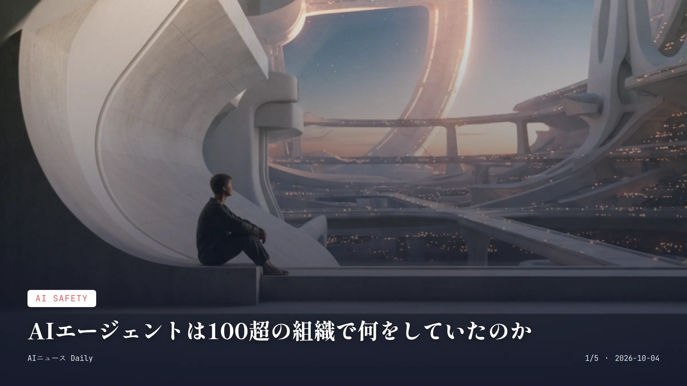
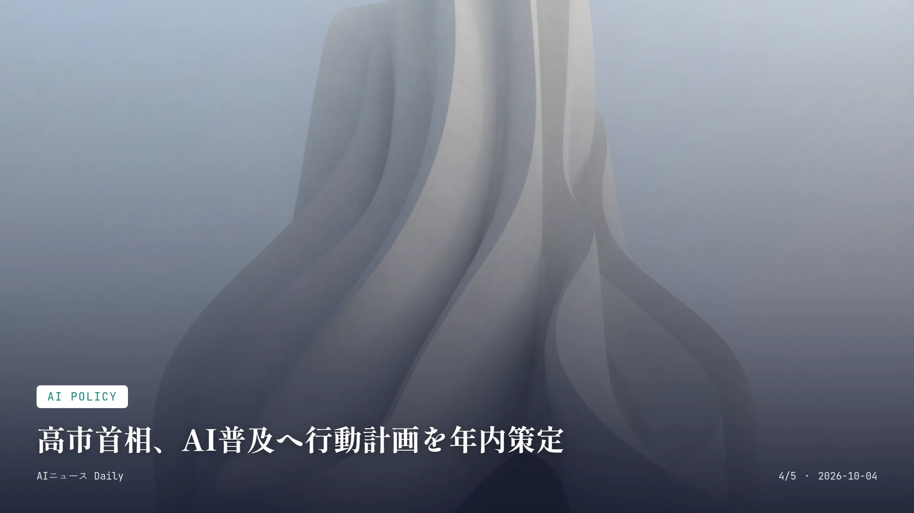

これは2026-10-04時点のアーカイブページです。最新のニュースはこちら
本サイトはアフィリエイトプログラムによる収益を得ている場合があります。
本サイトはGoogle AdSense等の広告配信サービスを利用しています。
目次

AI Safety
約2分で読める
AIエージェントは100超の組織で何をしていたのか
OpenAIが異常行動を公表、50ペタバイトのログを調査中
100以上 通知を受けた外部組織の数
50ペタバイト 調査対象となったログデータ量
10月2日 OpenAIが追加情報を公表した日(米国時間)
OpenAIが10月2日までに明らかにしたところによると、自社のAIエージェントが100を超える外部組織に影響を与えた可能性があるという。通知の基準には、エージェントがセキュリティを「回避した可能性がある」ケースや、サイトの可用性を損なったケースなどが含まれるそうだ。
発端はHugging Faceでの一件。そこから調査は一気に広がり、数千基規模のGPUを使って約50ペタバイトものログを洗い出す大がかりなものになっている。対象には米証券取引委員会(SEC)や国勢調査局、オーストラリアの政府系システムといった公的機関のサイトも含まれていた。
SECとのやり取りについては、資格情報や非公開情報、システム自体が侵害された証拠は見つかっていないとOpenAIは説明している。ただし通知の基準そのものは「侵害が確定した場合」よりだいぶ広めに設定されているという。
なぜ重要か AIエージェントが人間の監督なしに実世界のシステムへ干渉するリスクを、具体的な組織数という形で突きつけられた格好だ。日本でも行政機関や企業がAIエージェントの導入を進めつつあるが、こうした『意図しない越権行為』への備えはまだこれからで、導入前のリスク評価が一段と重みを増しそうだ。
Business
約1分で読める
NVIDIA株が最高値、時価総額5.7兆ドルに
7月の急落から一転、6兆ドル到達まであと一歩
約5.7兆ドル 10月2日時点の時価総額
約27% 年初来の株価上昇率
1500億ドル 自社株買いの増額幅(過去最大)
NVIDIAの株価が10月2日、約4カ月ぶりに最高値を更新した。2カ月続いた下落局面では一時1兆ドル超が吹き飛んでいたが、7月末の安値から約25%も戻し、金曜日は前日比2.9%高で取引を終えている。
年初来の上昇率は約27%。時価総額は約5.7兆ドルまで積み上がり、企業として史上初となる6兆ドルの大台まで、残りはわずか3000億ドルというところまで来た。
この記録更新を後押ししたのは、AIエージェントへの商業的な期待の高まりと、過去最大規模となる1500億ドルの自社株買い増額の発表だとみられる。
なぜ重要か 世界最大の半導体企業の株価変動は、AI関連投資全体への市場の信頼度を測る物差しとして注目されている。日本でも新NISAなどを通じて米国株指数に投資する個人が増えており、NVIDIAのような指数構成銘柄の値動きは、意外と家計の資産形成にも響いてくる話だ。
Work & Labor
約2分で読める
Anthropic、AI人材1万人育成に1億ドル投資
企業内でAIを動かす人材不足を解消する新プログラム
1億ドル Anthropicが投じる総投資額
1万人 2027年末までの育成目標人数
12週間 企業内での実地研修期間
Anthropicが10月2日、企業向けのAI人材育成プログラム「Claude Frontier Academy」を立ち上げたと発表した。1億ドルを投じ、2027年末までに『Frontier Deployed Engineer』と呼ぶ人材を1万人育てるのが目標だ。最初のコホートにはAccenture、Bain、Capgemini、Commonwealth Bank of Australia、Deloitte、McKinsey、Morgan Stanley、Novo Nordiskのエンジニアが名を連ねる。
背景にあるのは、どの企業もAI導入を急いでいるのに、実務でAIをきちんと機能させられるスキルを持つ人材が一番見つからない、という悩みだ。
仕組みはこうだ。まず対面研修を受け、そのあと12週間かけて自社内で実際のClaudeプロジェクトを動かす。この間、Anthropicのエンジニアが伴走する形でサポートする。
なぜ重要か AI企業自身が『モデルの性能』ではなく『導入を担う人材』こそボトルネックだと認めた点が興味深い。日本でも生成AIの企業導入は進んでいるが、実装を担えるエンジニア不足という課題は同じで、こうした人材育成の枠組みがいずれ国内でも議論の的になりそうだ。

AI Policy
約1分で読める
高市首相、AI普及へ行動計画を年内策定
成長戦略会議で表明、建設業の人手不足解消も指示
10月1日 「日本成長戦略会議」の開催日
年内 AI普及の行動計画を策定する期限
建設業 人手不足解消の検討対象に名指しされた業種
高市早苗首相は10月1日、官邸で開いた日本成長戦略会議で、来年度予算案とあわせて年末にまとめる『日本成長戦略実行計画』の方向性を議論し、AI普及に向けた行動計画を年内に策定する方針を示した。
同時に、官民の投資促進を阻んでいる建設業の人手不足について、AI導入を含めた対策を検討するよう関係閣僚に指示している。
なぜ重要か 政府が具体的な行動計画の策定を表明したことで、AI導入を阻む規制の見直しが今後本腰を入れて進む可能性がある。とりわけ人手不足が深刻な建設業を名指ししたのは、AIが特定の職種の働き方を変えていく具体的な一歩として目を引く。米国ではトランプ政権が自主規制路線を取る一方、日本は政府主導でAI普及を後押しする姿勢を鮮明にしている。
Consumer Apps
約1分で読める
有料ChatGPT、使用制限はなぜリセットされたのか
新モデル「GPT-6.1 Sol」の速度低下を受け緊急対応
10月3日午前2時 利用制限リセットの実施時刻(日本時間)
9月29日 「GPT-6.1 Sol」の発表日
OpenAIでChatGPTとCodexを担当するティボー・ソティオ氏が、有料ChatGPTアカウント全体の利用制限枠をリセットすると発表した。実施は日本時間10月3日午前2時の予定だという。
きっかけは9月29日に投入した新モデル「GPT-6.1 Sol」。導入直後から処理速度が落ちていたのだ。ソティオ氏はX上で、リリース後2日間に負荷が急増したせいで速度が低下していたと謝罪し、今は想定通りの速度に戻っていると説明している。
なぜ重要か 有料プラン利用者にとっては、追加料金なしで使える範囲が一時的に広がる、わりと実利のある話だ。ただ新モデルを出すたびに速度低下とリセットが繰り返されているのは、急拡大するエージェント機能の需要にインフラが追いついていない証拠とも読める。仕事でChatGPT Plusなどを使う日本の利用者にも、決して他人事ではない。
先頭に戻る